Goood Morgen
En morgen barna gleder seg til. Goood Morgen hjelper barn gjennom morgenrutinen. Én oppgave om gangen, poeng underveis og et nytt tema hver natt.
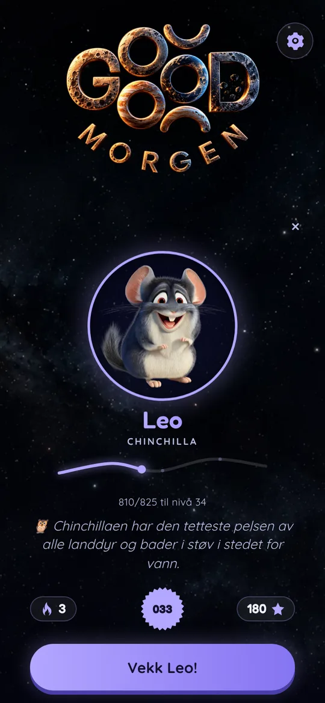
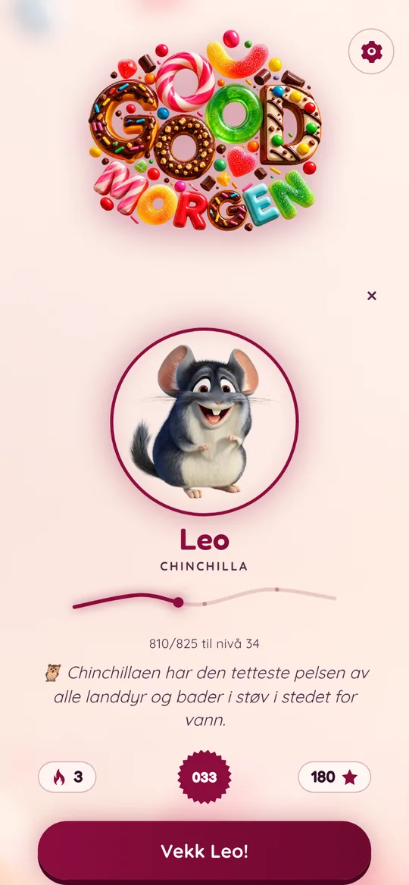
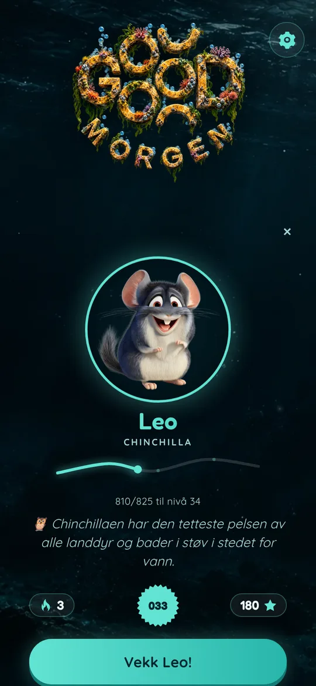
Slik fungerer det
Barna ser bare det de skal gjøre nå. Resten tar appen seg av.
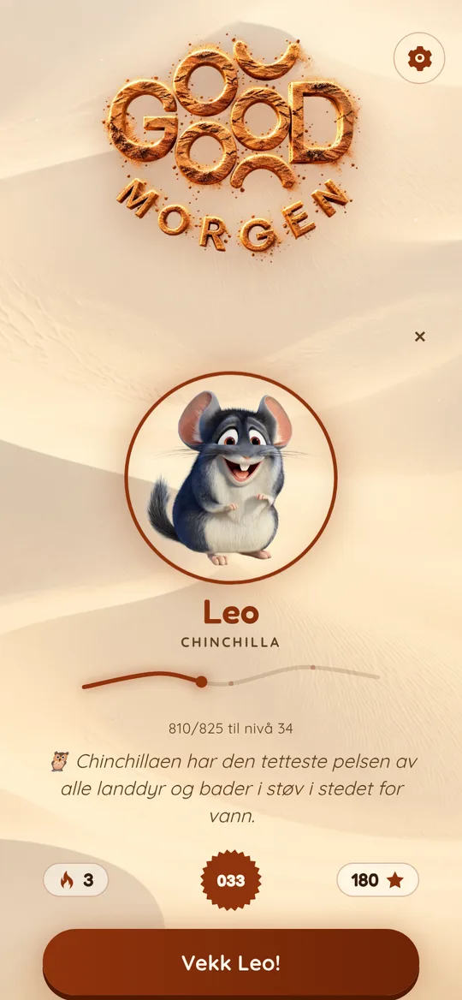
Vekk barnet
Hvert barn har sitt eget dyr, sine egne poeng og sin egen strek med dager på rad. Ett trykk starter morgenen.
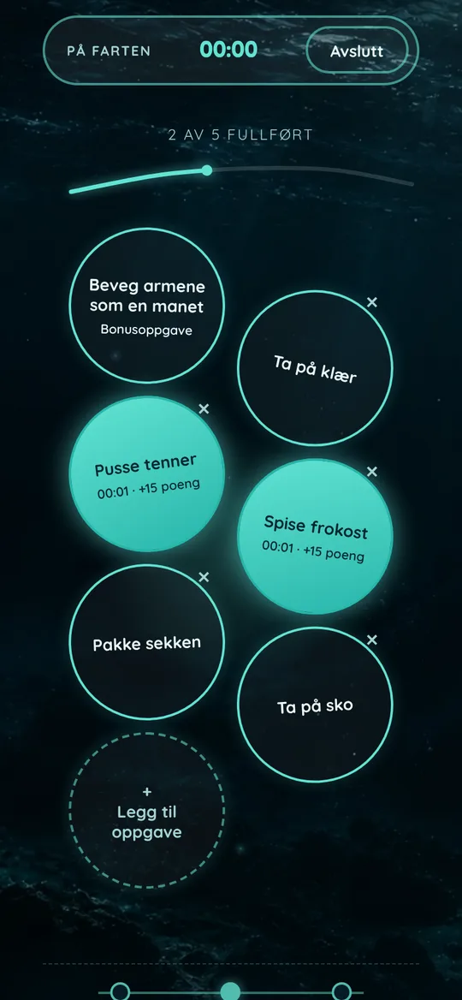
Én oppgave om gangen
Tenner, klær, frokost og sekk. Når en oppgave er gjort, flytter lyset seg ett steg lenger på stien.
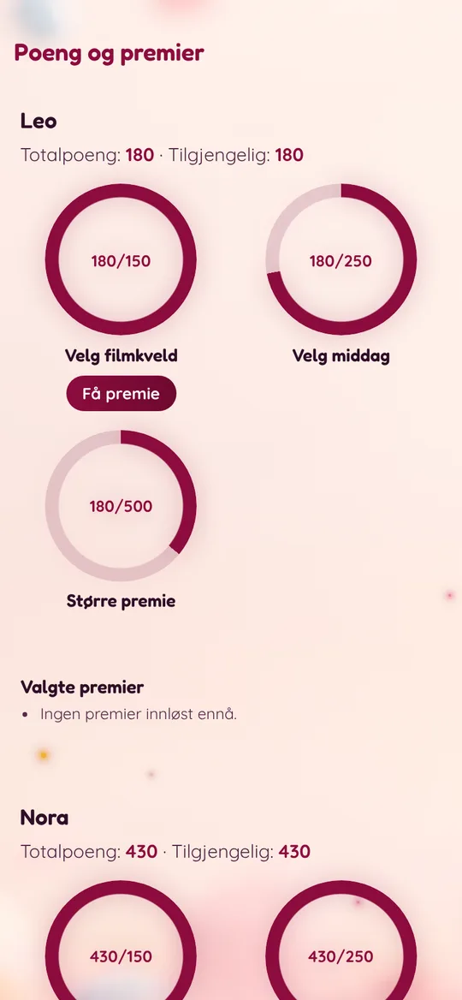
Poeng blir til premier
Hver oppgave gir poeng som kan byttes mot premier dere bestemmer selv, som filmkveld eller å velge middag.
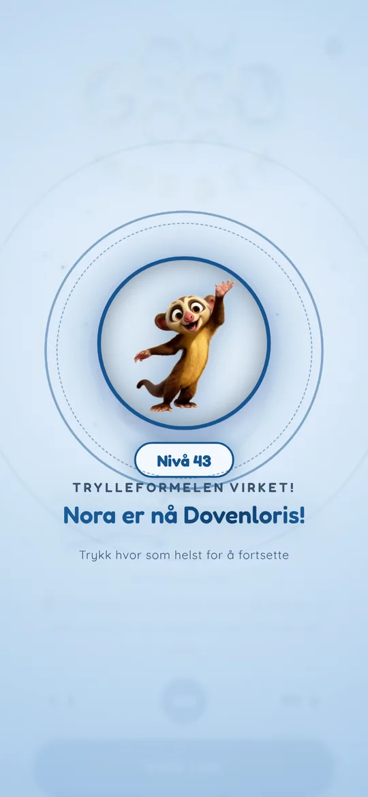
Nye dyr å møte
Jo flere oppgaver barnet fullfører, desto høyere nivå. Hvert av de 200 nivåene har sitt eget dyr.
Ny verden hver morgen
Tolv temaer
Appen bytter bakgrunn, farger og logo hver natt. Tolv temaer venter, fra verdensrom og dyphav til fotball, Minecraft og godteri. Alle i familien ser samme tema samme dag, på alle enheter.
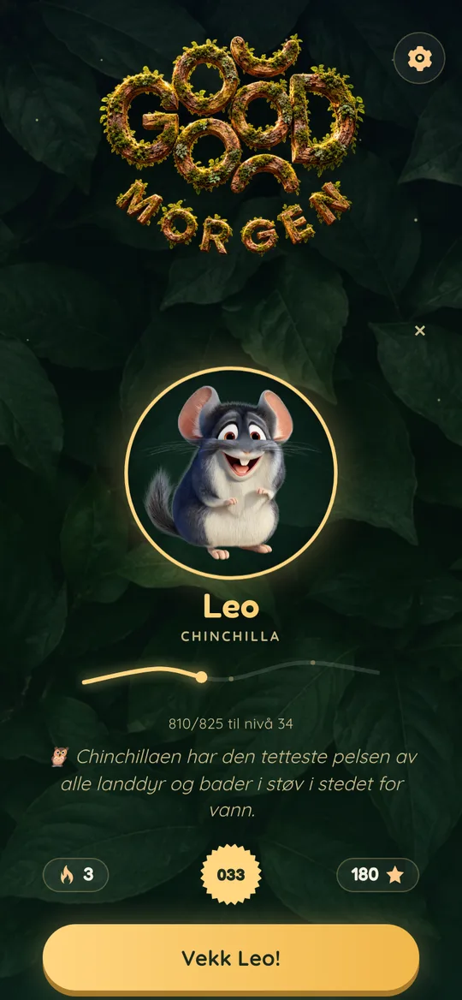
Magisk skog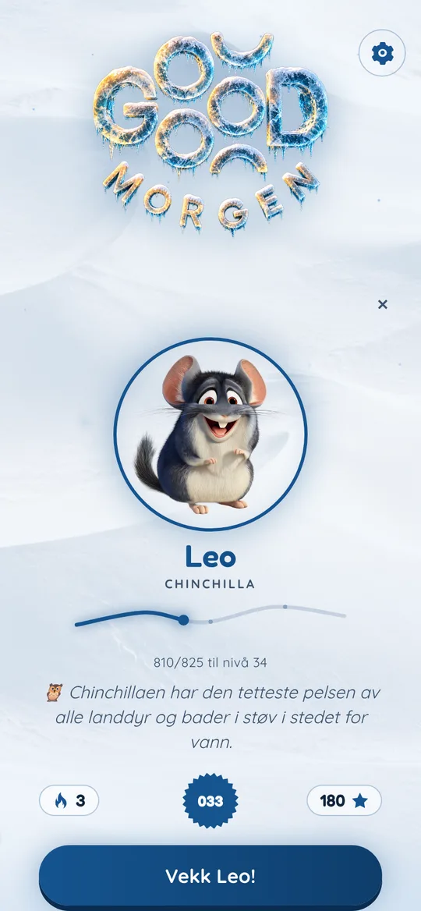
Istid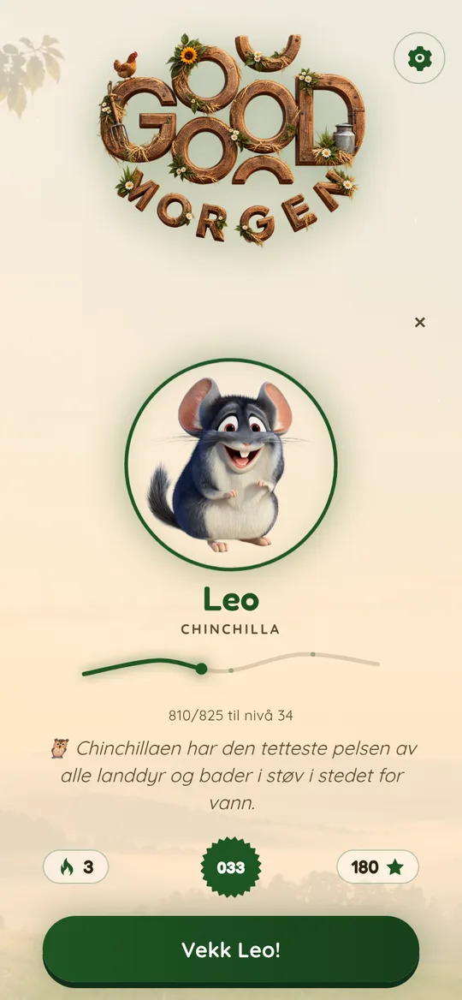
Bondegård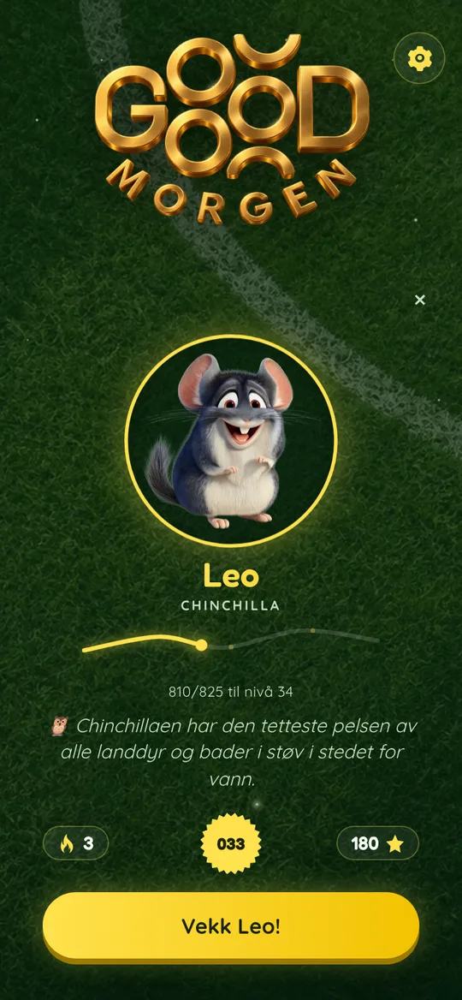
Fotball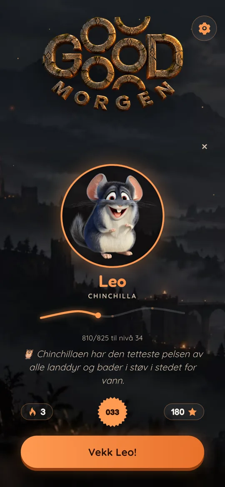
Gaming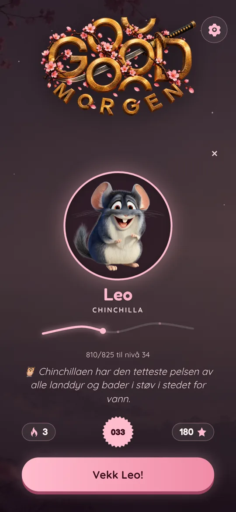
Japan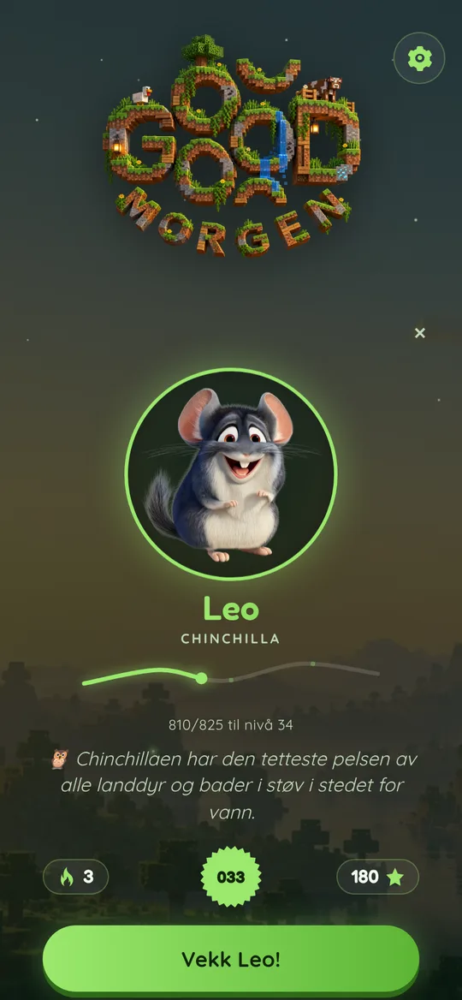
Minecraft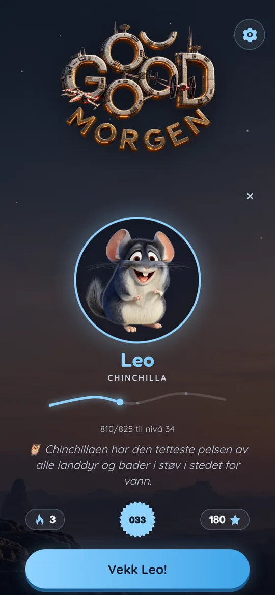
Star WarsJokeroppgaver
Små overraskelser underveis
Innimellom dukker det opp en bonusoppgave som passer til dagens tema. Noe morsomt å gjøre mellom tannbørsten og frokosten.
Beveg armene som en manet
Under havet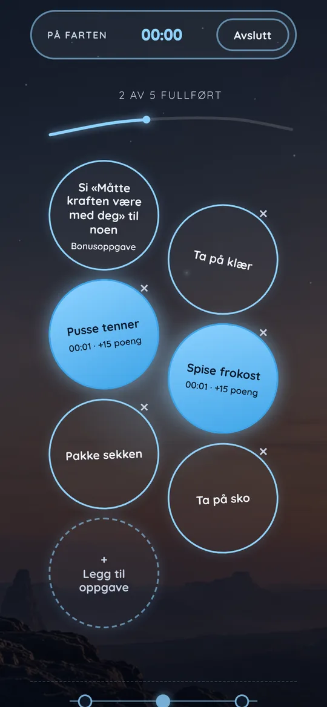
Si «Måtte kraften være med deg» til noen
Star Wars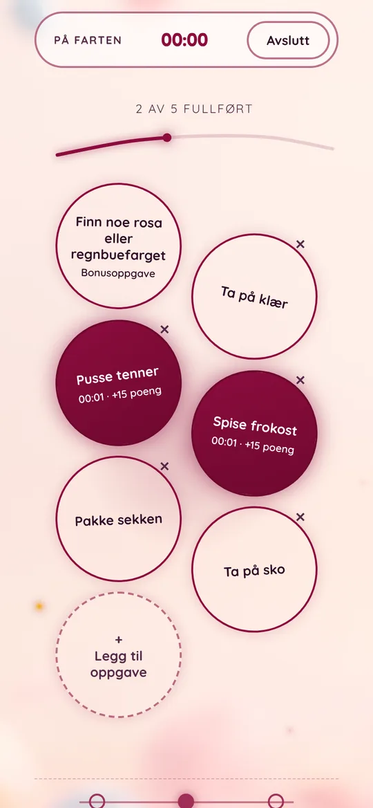
Finn noe rosa eller regnbuefarget
GodteriEnkelt for hele familien
Flere barn
Hvert barn får sine egne oppgaver, poeng og nivåer.
Samme kode overalt
Koble sammen mobilene med en kort kode, for eksempel «modig-fennek-27». Ingen e-post eller passord.
Dere bestemmer
Dere velger selv oppgavene og premiene.